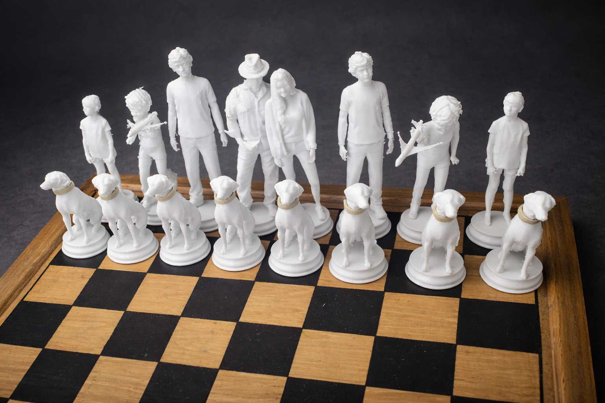

Ajedrez 3D — dominio digital-físico
Conjunto de piezas de ajedrez personalizadas mediante impresión 3D en polímero blanco mate. La serie sustituye las figuras tradicionales que represetan a una familia y su mascota canina con un alto nivel de detalle anatómico, logrando un contraste nítido sobre el tablero de madera. Es una muestra de la interacción que puede conseguirse al combinar manufactura aditiva para transformar un objeto clásico en una pieza de narrativa personal.